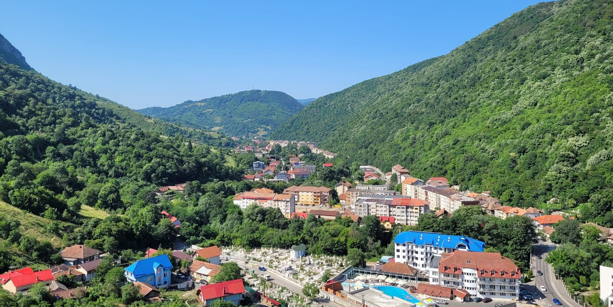

Publications
- Near-optimal node-private community estimation in polynomial time (L.A. Marchis, O. Klopp, P.L. Loh, I. Zadik), arXiv:2607.09441, 2026
- Node-private community estimation in stochastic block models: Tractable algorithms and lower bounds (L.A. Marchis, E. D'souza, T. Flídr, P.L. Loh), arXiv:2605.15943, 2026
- On the Benefits of Accelerated Optimization in Robust and Private Estimation (L.A. Marchis, P.L. Loh), arXiv:2506.03044, 2025